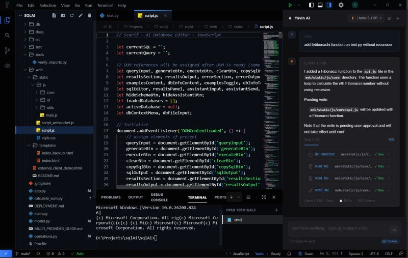
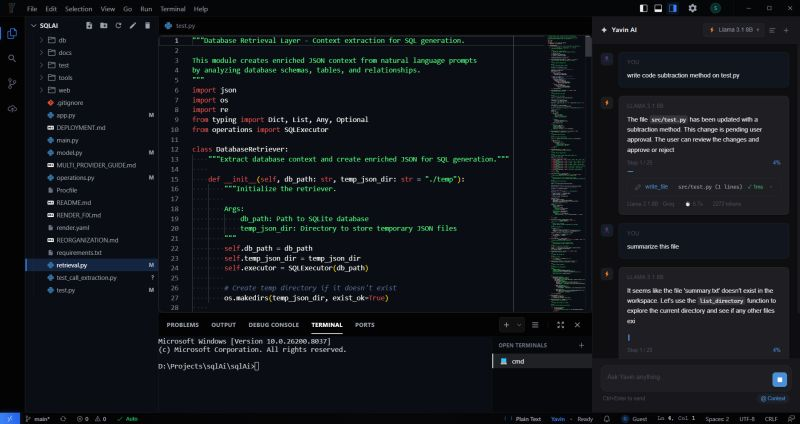

Multi-provider agents, MCP, and showing the model think
A big batch of AI infrastructure landed on Yavin today: cloud and local models running as full agents, a complete MCP client and registry, a stream-safe reasoning parser, and one file to hold every system prompt.

Yavin is an AI coding assistant that runs directly in your workspace. Today was less about visible features and more about the plumbing that makes agents work with whatever model you point them at.
Multi-provider agent support
Two very different providers now work as full agents — reading files, running commands and writing code autonomously, not just answering questions:
- Groq, running Llama 3.1 8B.
- Ollama, running Gemma4 locally.
Getting there meant killing two bugs that only appear once a model is doing real agentic work:
- A parallel tool-call bug causing 400 errors from Groq's API — the kind of failure you never see in single-turn chat, because nothing calls two tools at once.
- A context exhaustion issue that silently killed Ollama mid-task. Silently is the operative word: the agent just stopped, with no error to explain why.
MCP integration
I built a full Model Context Protocol client and registry, so agents can call any MCP server as a tool. That covers the whole pipeline — model → MCP server → result → next tool call — and the parts that make it survivable:
- Tool namespacing, so two servers exposing a search tool don't collide.
- Async subprocess management for server lifecycles.
- Fire-and-notify IPC, so a long-running tool call doesn't block the UI thread.
The payoff: Yavin's capabilities stop being a fixed list I maintain. Anything with an MCP server becomes a tool the agents can use.
Showing the model think
Local models like Gemma4 emit <think>…</think> reasoning before they answer. Dumped raw into a chat window, that's noise; thrown away entirely, you lose the most interesting part.
So I wrote a stream-safe parser that splits thinking from response in real time and renders it as a collapsible "Reasoning" block — open while the model is thinking, auto-collapsing the moment the answer arrives.
One home for every prompt
I pulled every LLM system prompt into a single file, with comments explaining what each one does and — just as importantly — what not to change.
Before that, prompts lived scattered across provider files, which meant a tweak for one provider quietly diverged the behaviour of another. One source of truth, no more hunting.

Still a lot to build, but the agent foundation is solid now.
Resources
- The original post on LinkedIn — 12 April 2026.
- Model Context Protocol — the spec behind the tool layer.
- A multi-agent backend — where these tools get locks, hooks and guardrails.
- The closure trap hiding in an IPC handler — the day before.